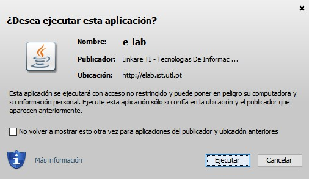

Proceso de Instalación del Laboratorio World Pendulum Alliance
Para realizar el proceso de instalación de una forma adecuada, se deben seguir las
siguientes descargas e instalaciones:
• Instale o actualice su versión de JAVA:
https://www.java.com/es/download/
• Instale o actualice el reproductor multimedia VLC:
https://www.videolan.org/vlc/
• Descargue e Instale el aplicativo e-Lab:
http://e-lab.ist.utl.pt/rec.web/client/elab-client.jnlp
Una vez realizado el proceso anterior procedemos a realizar los siguientes
pasos:
Paso 1
Una vez actualizada la versión de JAVA e instalado el VLC, procedemos a descargar el
instalador del e-Lab.
Paso 2
Abrimos el instalador del e-Lab y le damos ejecutar para iniciar la instalación.
Paso 3
Cuando la instalación finalice adecuadamente, aparecerá un aviso del inicio del
laboratorio WPA:
Paso 4
En la lista de despliegue seleccione el laboratorio World Pendulum y de siguiente. (Nota: no
es necesario incluir una contraseña)
Paso 5
Seleccione el péndulo que desee, para la realización del
experimento remoto. (Ejemplo:
Bogotá-UniAndes), seguido del botón entrar.
Paso 6
Seleccione un desplazamiento de la muestra o deslocamiento inicial (Ejemplo 15
cm), seguido seleccione un número de muestras (Ejemplo: 100)
Paso 7
Luego de seleccionar el deslocamiento y el numero de muestras deseadas, seleccionamos ok
seguido de play para iniciar el experimento.
Paso 8
Cuando el experimento inicie adecuadamente, se generará un tabla
de valores la cual se
ira llenando en tiempo real.
Paso 9
Damos click en el botón inferior del icono "guardar" (imagen de disquette) y lo guardamos en
la ubicación
deseada en nuestro equipo.